library(tidyverse)
library(nasapower)
library(cowplot)
library(ggthemes)
library(rgdal)
library(raster)
library(INLA)
library(spdep)
library(psych)
library(ggsn)
library(gstat)
library(maptools)
library(rnaturalearth)
library(rnaturalearthhires)
source("Bdiclcpomodel_stack.R")
source("coord_transform.R")hh_hlb = read.table("data/hlb_form_map2.txt") %>%
mutate(positive = case_when(presenca=="Present" ~ 1,
presenca=="Absent" ~ 0)) %>%
unite("latlon",lat,lon,remove = F) %>%
group_by(latlon) %>%
dplyr::filter(positive == max(positive)) %>%
ungroup() %>%
dplyr::select(-latlon)transform coordinates to utm
BRA <- ne_states(country = "Brazil", returnclass = "sf")
# subset spatial objects of only the states of interest
MG <- BRA[BRA$name_en == "Minas Gerais", ]MG_shape = readOGR("./data/MG", "MG_Unidade_Federacao_2017_ago")## Warning in OGRSpatialRef(dsn, layer, morphFromESRI =
## morphFromESRI, dumpSRS = dumpSRS, : Discarded datum
## Sistema_de_Referencia_Geocentrico_para_las_AmericaS_2000 in CRS definition:
## +proj=longlat +ellps=GRS80 +towgs84=0,0,0,0,0,0,0 +no_defs## OGR data source with driver: ESRI Shapefile
## Source: "C:\Users\kai-q\Google Drive\Kaique-Alves\HLB_MG\Paper_hlb_maping_risk\01 - data_analysis\data\MG", layer: "MG_Unidade_Federacao_2017_ago"
## with 1 features
## It has 4 fieldsMG_shape = spTransform(MG_shape, CRSobj = "+proj=longlat")
# MG_shape = spTransform(MG_shape, CRS("+proj=utm +zone=23 +south ellps=WGS84"))
plot(MG_shape)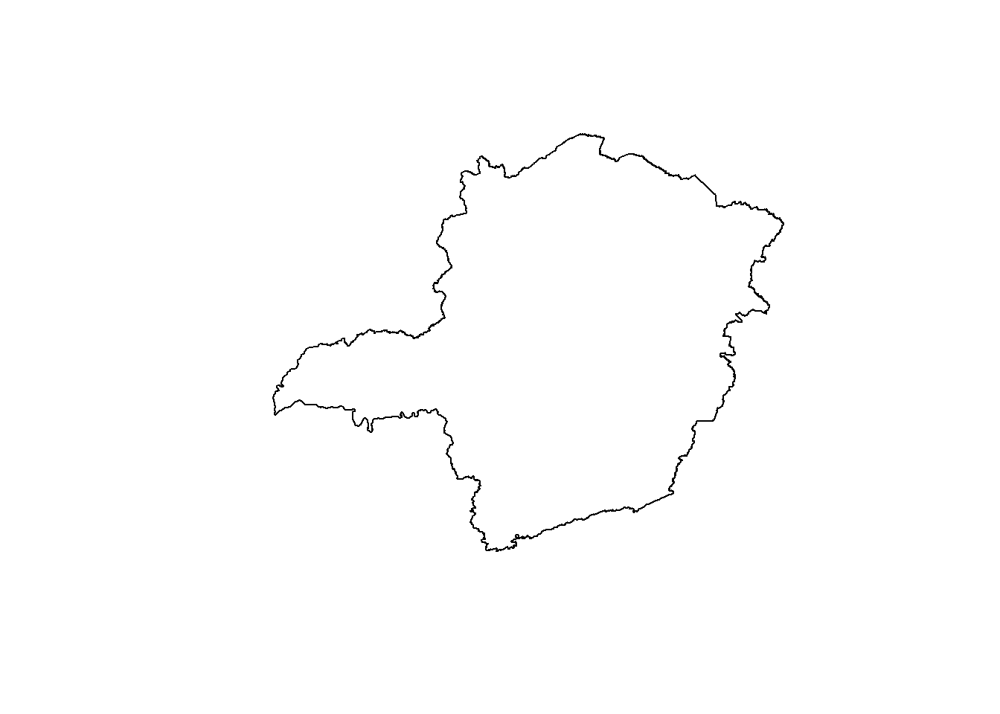
cs <- c(.4,.4)
# cs <- c(25000,25000)
grdpts = makegrid(MG_shape, cellsize = cs)
spgrd <- SpatialPoints(grdpts, proj4string = CRS(proj4string(MG_shape)))## Warning in proj4string(MG_shape): CRS object has comment, which is lost in
## outputspgrdWithin <- SpatialPixels(spgrd[MG_shape,])
grid_df = as.data.frame(as(spgrdWithin,"SpatialPixelsDataFrame" )@coords)
plot(spgrdWithin)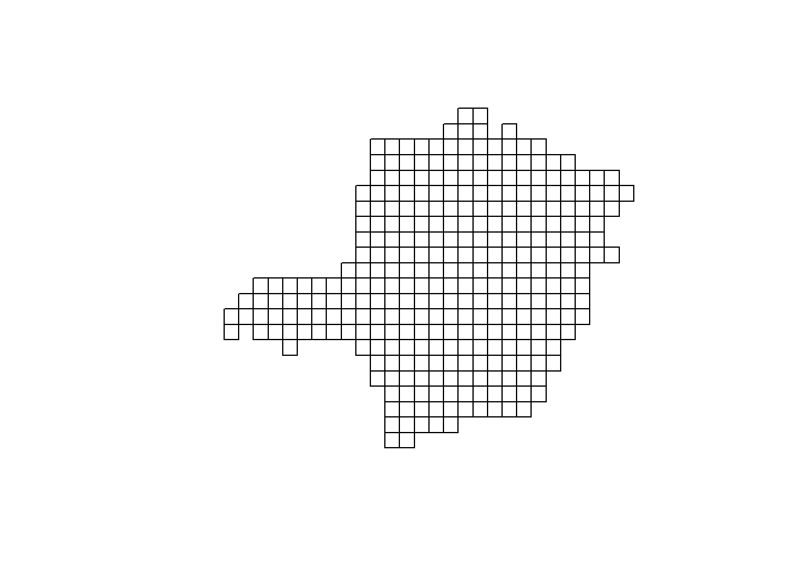
#create dataframe with only positives
hh_hlb_positive = hh_hlb %>%
filter(positive == 1)
lon = hh_hlb_positive$lon
lat = hh_hlb_positive$lat
xy <- data.frame( lon, lat)
hlb_coords = SpatialPoints(xy,proj4string = CRS(proj4string(MG_shape)))## Warning in proj4string(MG_shape): CRS object has comment, which is lost in
## outputr = raster(spgrdWithin)
r[] <- 0
mg_raster = raster(MG_shape)
mg_raster[] <- 0
rr_positive = mask(r,mask = MG_shape)
tab <- table(cellFromXY(rr_positive, hlb_coords))
rr_positive[as.numeric(names(tab))] <- tab
plot(rr_positive)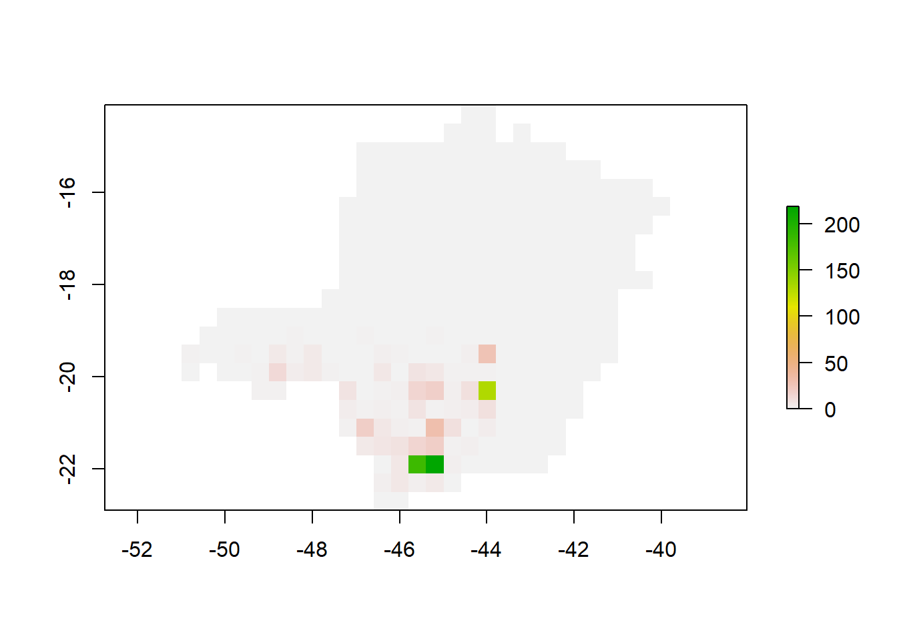
# Mini
hh_hlb_mini = hh_hlb %>%
filter(class=="Mini")
lon = hh_hlb_mini$lon
lat = hh_hlb_mini$lat
xy <- data.frame( lon, lat)
hlb_coords = SpatialPoints(xy,proj4string = CRS(proj4string(MG_shape)))## Warning in proj4string(MG_shape): CRS object has comment, which is lost in
## outputr = raster(spgrdWithin)
r[] <- 0
mg_raster = raster(MG_shape)
mg_raster[] <- 0
rr_mini = mask(r, mask = MG_shape) #<<<<<
tab <- table(cellFromXY(rr_mini, hlb_coords))#<<<<<
rr_mini[as.numeric(names(tab))] <- tab#<<<<<
# Small
hh_hlb_small = hh_hlb %>%
filter(class=="Small")
lon = hh_hlb_small$lon#<<<<<
lat = hh_hlb_small$lat#<<<<<
xy <- data.frame( lon, lat)
hlb_coords = SpatialPoints(xy,proj4string = CRS(proj4string(MG_shape)))## Warning in proj4string(MG_shape): CRS object has comment, which is lost in
## outputr = raster(spgrdWithin)
r[] <- 0
mg_raster = raster(MG_shape)
mg_raster[] <- 0
rr_small = mask(r, mask = MG_shape) #<<<<<
tab <- table(cellFromXY(rr_small, hlb_coords))#<<<<<
rr_small[as.numeric(names(tab))] <- tab#<<<<<
# medium
hh_hlb_medium = hh_hlb %>%
filter(class=="Medium")
lon = hh_hlb_medium$lon#<<<<<
lat = hh_hlb_medium$lat#<<<<<
xy <- data.frame( lon, lat)
hlb_coords = SpatialPoints(xy,proj4string = CRS(proj4string(MG_shape)))## Warning in proj4string(MG_shape): CRS object has comment, which is lost in
## outputr = raster(spgrdWithin)
r[] <- 0
mg_raster = raster(MG_shape)
mg_raster[] <- 0
rr_medium = mask(r, mask = MG_shape) #<<<<<
tab <- table(cellFromXY(rr_medium, hlb_coords))#<<<<<
rr_medium[as.numeric(names(tab))] <- tab#<<<<<
# Large
hh_hlb_large = hh_hlb %>%
filter(class=="Large")
lon = hh_hlb_large$lon#<<<<<
lat = hh_hlb_large$lat#<<<<<
xy <- data.frame( lon, lat)
hlb_coords = SpatialPoints(xy,proj4string = CRS(proj4string(MG_shape)))## Warning in proj4string(MG_shape): CRS object has comment, which is lost in
## outputr = raster(spgrdWithin)
r[] <- 0
mg_raster = raster(MG_shape)
mg_raster[] <- 0
rr_large = mask(r, mask = MG_shape) #<<<<<
tab <- table(cellFromXY(rr_large, hlb_coords))#<<<<<
rr_large[as.numeric(names(tab))] <- tab#<<<<<
plot(rr_large)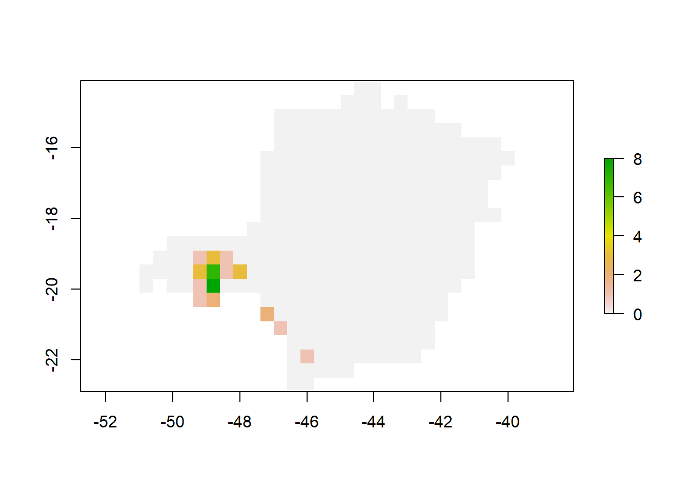
# Orange
hh_hlb_orange = hh_hlb %>%
filter(especie=="Sweet orange")
lon = hh_hlb_orange$lon
lat = hh_hlb_orange$lat
xy <- data.frame( lon, lat)
hlb_coords = SpatialPoints(xy,proj4string = CRS(proj4string(MG_shape)))## Warning in proj4string(MG_shape): CRS object has comment, which is lost in
## outputr = raster(spgrdWithin)
r[] <- 0
mg_raster = raster(MG_shape)
mg_raster[] <- 0
rr_orange = mask(r, mask = MG_shape) #<<<<<
tab <- table(cellFromXY(rr_orange, hlb_coords))#<<<<<
rr_orange[as.numeric(names(tab))] <- tab#<<<<<
# Mandarin
hh_hlb_mandarin = hh_hlb %>%
filter(especie=="Mandarins")
lon = hh_hlb_mandarin$lon#<<<<<
lat = hh_hlb_mandarin$lat#<<<<<
xy <- data.frame( lon, lat)
hlb_coords = SpatialPoints(xy,proj4string = CRS(proj4string(MG_shape)))## Warning in proj4string(MG_shape): CRS object has comment, which is lost in
## outputr = raster(spgrdWithin)
r[] <- 0
mg_raster = raster(MG_shape)
mg_raster[] <- 0
rr_mandarin = mask(r, mask = MG_shape) #<<<<<
tab <- table(cellFromXY(rr_mandarin, hlb_coords))#<<<<<
rr_mandarin[as.numeric(names(tab))] <- tab#<<<<<
# Lemon
hh_hlb_lemon = hh_hlb %>%
filter(especie=="Lemon")
lon = hh_hlb_lemon$lon#<<<<<
lat = hh_hlb_lemon$lat#<<<<<
xy <- data.frame( lon, lat)
hlb_coords = SpatialPoints(xy,proj4string = CRS(proj4string(MG_shape)))## Warning in proj4string(MG_shape): CRS object has comment, which is lost in
## outputr = raster(spgrdWithin)
r[] <- 0
mg_raster = raster(MG_shape)
mg_raster[] <- 0
rr_lemon = mask(r, mask = MG_shape) #<<<<<
tab <- table(cellFromXY(rr_lemon, hlb_coords))#<<<<<
rr_lemon[as.numeric(names(tab))] <- tab#<<<<<
# acide lime
hh_hlb_acidlime = hh_hlb %>%
filter(especie=="Acid lime")
lon = hh_hlb_acidlime$lon#<<<<<
lat = hh_hlb_acidlime$lat#<<<<<
xy <- data.frame( lon, lat)
hlb_coords = SpatialPoints(xy,proj4string = CRS(proj4string(MG_shape)))## Warning in proj4string(MG_shape): CRS object has comment, which is lost in
## outputr = raster(spgrdWithin)
r[] <- 0
mg_raster = raster(MG_shape)
mg_raster[] <- 0
rr_acidlime = mask(r, mask = MG_shape) #<<<<<
tab <- table(cellFromXY(rr_acidlime, hlb_coords))#<<<<<
rr_acidlime[as.numeric(names(tab))] <- tab#<<<<<
plot(rr_mandarin)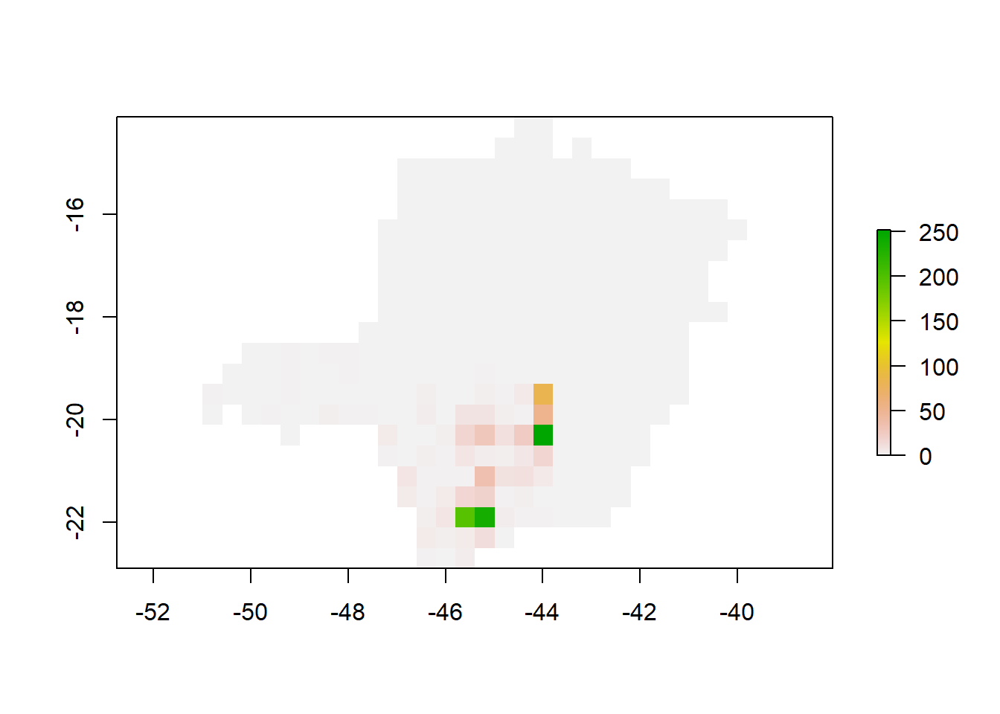
lon = hh_hlb$lon
lat = hh_hlb$lat
xy <- data.frame( lon, lat)
hlb_coords = SpatialPoints(xy,proj4string = CRS(proj4string(MG_shape)))## Warning in proj4string(MG_shape): CRS object has comment, which is lost in
## outputr = raster(spgrdWithin)
df_area = aggregate(hh_hlb[, 'area', drop=FALSE], hh_hlb[,3:2], mean)
coordinates(df_area) <- ~ lon + lat
# extent(r) <- extent(df_area)
rr_area = rasterize(df_area, r, df_area$area, fun = mean)
plot(rr_area)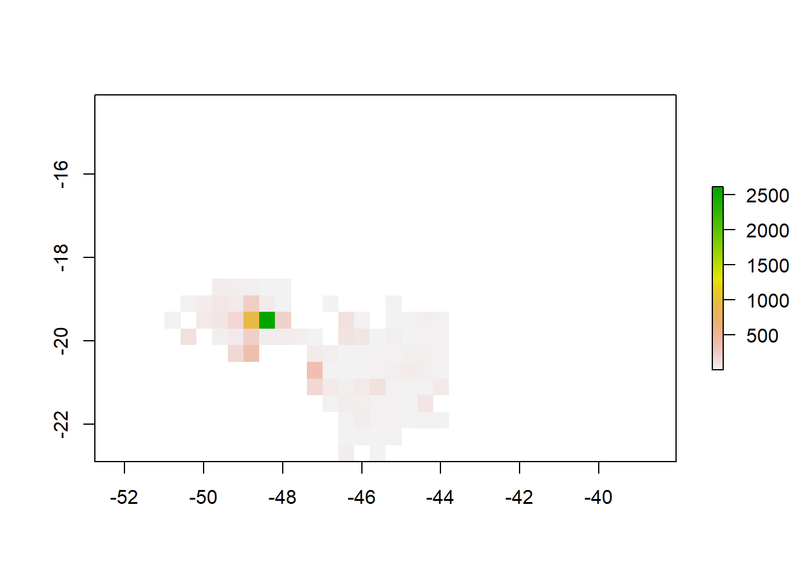
# rr_area
# rrlon = hh_hlb$lon
lat = hh_hlb$lat
xy <- data.frame( lon, lat)
hlb_coords = SpatialPoints(xy,proj4string = CRS(proj4string(MG_shape)))## Warning in proj4string(MG_shape): CRS object has comment, which is lost in
## outputr = raster(spgrdWithin)
r[] <- 0
mg_raster = raster(MG_shape)
mg_raster[] <- 0
rr = mask(r, mask = MG_shape)
tab <- table(cellFromXY(rr, hlb_coords))
rr[as.numeric(names(tab))] <- tab
plot(rr)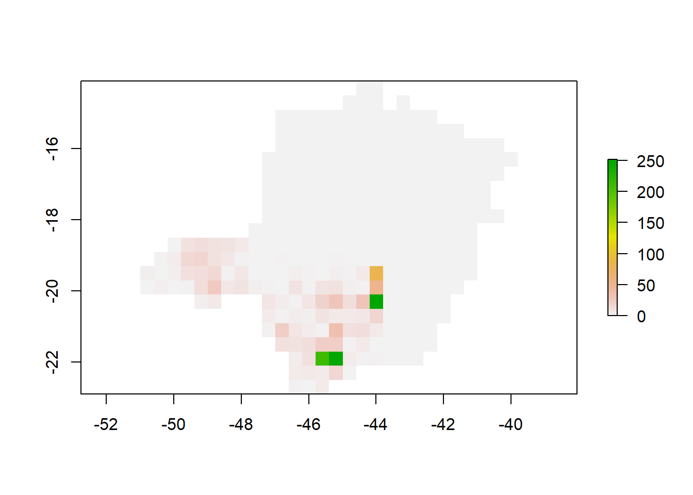
rr2 = rr>0 & !is.na(rr)
grid_df = as.data.frame(as(rr2, "SpatialPixels")@coords) %>%
mutate(samp = rr2[]) %>%
filter(samp ==TRUE)ggplot()+
geom_sf( data = BRA, fill = "white", color = "gray90")+
geom_sf(data = MG, fill = "gray99", color = "black") +
geom_tile(data =grid_df,aes(x,y),
fill ="gray90",
size = .2,
color = "gray75", alpha = 0.8)+
geom_point(data = hh_hlb %>% dplyr::select(-presenca),
aes(lon, lat),
size = 0.3, color = "gray80")+
geom_point(data = hh_hlb,
aes(lon, lat, color = presenca),
size = 0.3, alpha = 1)+
scale_color_manual(values =c("#3e9b39", 'red'))+
coord_sf() +
guides(color = guide_legend(override.aes = list(size=2.5)))+
theme_minimal_grid()+
labs(x = "Longitude",
y = "Latitude",
color = "")+
north( location = "topleft", scale = 0.08, symbol = 10,
x.min=-51, x.max=-43.5, y.min=-23, y.max=-18)+
scalebar(location = "bottomleft", dist = 50,
dist_unit = "km", transform = TRUE,
x.min=-51, x.max=-44, y.min=-23, y.max=-18,
st.bottom = FALSE,
st.dist = 0.03, st.size = 2)+
ylim(-23, -18)+
xlim(-51, -43.5)+
facet_wrap(~presenca)+
theme(panel.border = element_rect(color = "gray"))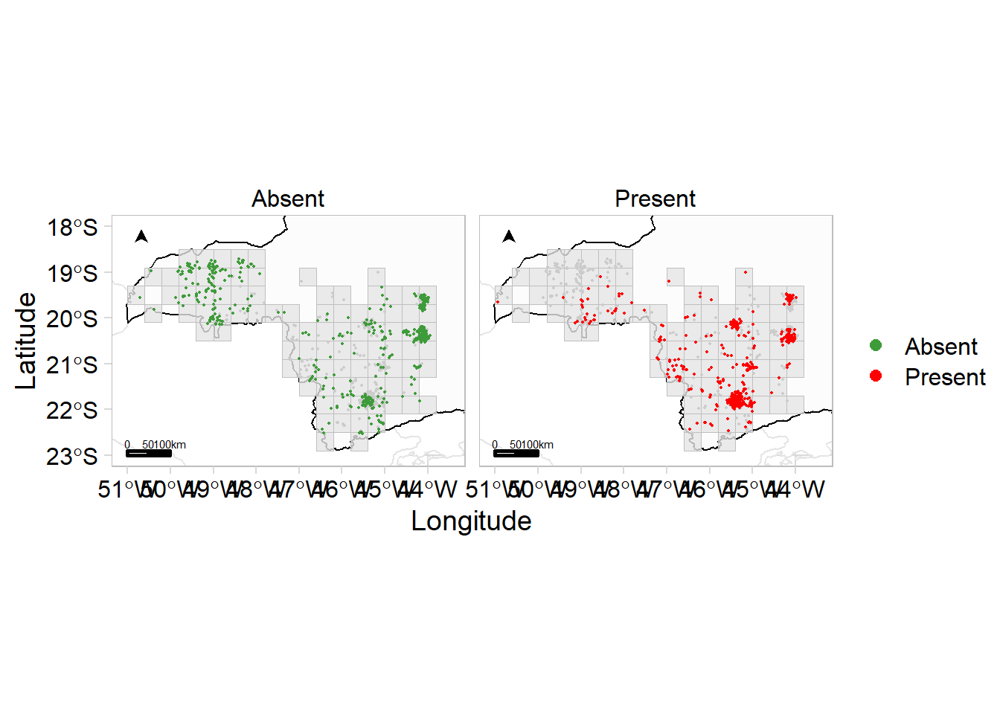
# ylim(-22.5, -21.5)+
# xlim(-46, -44)
ggsave("figs/map_disease.png", dpi = 600, height = 4, width = 11)grid_incidence = data.frame(coordinates(rr),
samples=rr[],
positives = rr_positive[],
area = rr_area[],
large = rr_large[],
medium = rr_medium[],
small = rr_small[],
mini=rr_mini[],
orange=rr_orange[],
mandarin = rr_mandarin[],
lemon=rr_lemon[],
acid_lime=rr_acidlime[]) %>%
mutate(samples = replace_na(samples , 0),
positives = replace_na(positives , 0),
area = replace_na(area , 0),
large = replace_na(large , 0),
medium = replace_na(medium , 0),
small = replace_na(small , 0),
mini=replace_na(mini , 0),
orange=replace_na(orange , 0),
mandarin = replace_na(mandarin , 0),
lemon=replace_na(lemon , 0),
acid_lime=replace_na(acid_lime , 0)) %>%
filter(samples>0)
min(grid_incidence$area)## [1] 0.5long = grid_incidence$x
lat = grid_incidence$y
xy <- data.frame(ID = 1:(length(lat)), long, lat)
coordinates(xy) <- c("long", "lat")
proj4string(xy) <- CRS("+init=epsg:4326")
res <- spTransform(xy, CRS("+proj=utm +zone=23 +south ellps=WGS84"))## Warning in showSRID(uprojargs, format = "PROJ", multiline = "NO"): Discarded
## datum Unknown based on WGS84 ellipsoid in CRS definitioncoords_grid = as.data.frame(res)
coords2 = as.matrix(coords_grid[,2:3])
colnames(coords2) <- c("x1","x2")
# max(coords_grid$long)-min(coords_grid$long) ID <- 1:dim(coords2)[1]
col.nb.0.all <- dnearneigh(coords2, 0, 70000, row.names=ID)
nb2INLA("./models/grid25.graph", col.nb.0.all)
grid_grafo25 <- inla.read.graph("./models/grid25.graph")
plot(grid_grafo25)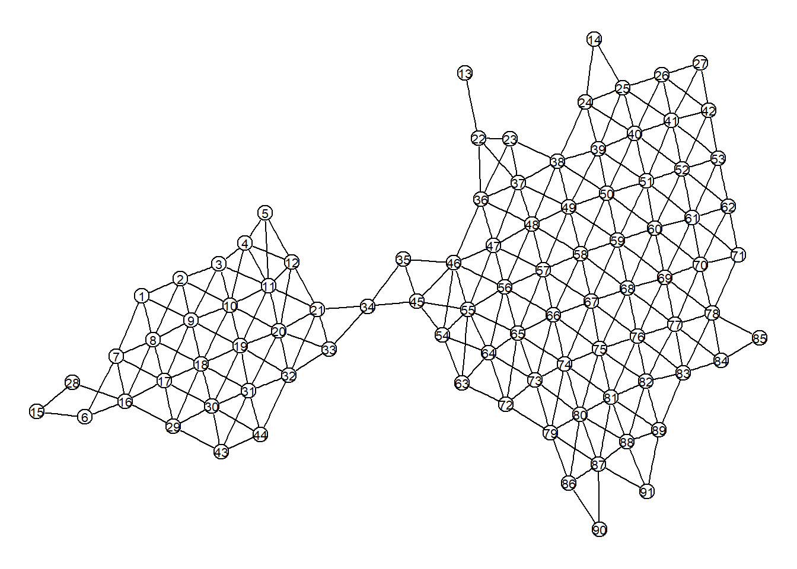
Moran’s I test for spatial autocorrelation
prop <- grid_incidence$positives/grid_incidence$samples
listw<- nb2listw(col.nb.0.all, zero.policy = T)
moran.test(prop, listw,zero.policy=T)##
## Moran I test under randomisation
##
## data: prop
## weights: listw
##
## Moran I statistic standard deviate = 4.8088, p-value = 7.591e-07
## alternative hypothesis: greater
## sample estimates:
## Moran I statistic Expectation Variance
## 0.291327369 -0.011111111 0.003955449Correcting coordinates values
power_load= read.table("data/power_data.txt") %>%
mutate(LON = LON-0.00001,
LAT = LAT-0.00001)
head(power_load)| LON | LAT | PARAMETER | JAN | FEB | MAR | APR | MAY | JUN | JUL | AUG | SEP | OCT | NOV | DEC | ANN |
|---|---|---|---|---|---|---|---|---|---|---|---|---|---|---|---|
| -49.6 | -18.7 | T2M | 24.90 | 24.85 | 24.56 | 23.84 | 21.77 | 20.99 | 21.56 | 23.99 | 26.48 | 27.36 | 26.30 | 25.30 | 24.33 |
| -49.6 | -18.7 | PRECTOT | 8.06 | 6.72 | 5.83 | 2.44 | 1.05 | 0.54 | 0.23 | 0.52 | 1.85 | 3.42 | 5.74 | 7.41 | 3.65 |
| -49.6 | -18.7 | WS10M | 2.69 | 2.44 | 2.49 | 2.71 | 2.93 | 3.19 | 3.69 | 3.97 | 3.90 | 3.29 | 2.91 | 2.84 | 3.09 |
| -49.2 | -18.7 | T2M | 24.32 | 24.31 | 24.01 | 23.26 | 21.13 | 20.15 | 20.64 | 22.93 | 25.56 | 26.51 | 25.53 | 24.65 | 23.58 |
| -49.2 | -18.7 | PRECTOT | 8.14 | 6.75 | 5.90 | 2.46 | 1.05 | 0.49 | 0.22 | 0.53 | 1.58 | 3.19 | 5.49 | 7.66 | 3.62 |
| -49.2 | -18.7 | WS10M | 2.87 | 2.61 | 2.67 | 2.90 | 3.08 | 3.41 | 3.93 | 4.22 | 4.13 | 3.48 | 3.08 | 2.98 | 3.28 |
dry_months = c("MAY","JUN","JUL","AUG")
power_tidy = power_load %>%
unite("latlong",LON,LAT) %>%
gather(3:14, key = "month", value = "measurement") %>%
mutate(season = case_when(month %in% dry_months ~"dry",
!month %in% dry_months ~"rainy")) %>%
group_by(latlong, PARAMETER, ANN, season) %>%
summarise(mean = mean(measurement)) %>%
spread(season, mean) %>%
ungroup()## `summarise()` regrouping output by 'latlong', 'PARAMETER', 'ANN' (override with `.groups` argument)data = bind_cols(
power_tidy %>%
filter(PARAMETER == "PRECTOT") %>%
mutate(prec_ann= ANN, prec_dry= dry, prec_rainy= rainy) %>%
dplyr::select(-ANN, -dry, -rainy,-PARAMETER),
power_tidy%>%
filter(PARAMETER == "T2M") %>%
mutate(temp_ann= ANN, temp_dry= dry, temp_rainy= rainy) %>%
dplyr::select(-ANN, -dry, -rainy,-PARAMETER,-latlong),
power_tidy%>%
filter(PARAMETER == "WS10M") %>%
mutate(wind_ann= ANN, wind_dry= dry, wind_rainy= rainy) %>%
dplyr::select(-ANN, -dry, -rainy,-PARAMETER,-latlong)
) %>%
separate(latlong, into = c("x", "y"), sep = "_", convert = TRUE) %>%
arrange(x,y) %>%
bind_cols(
grid_incidence %>%
arrange(x,y) %>%
mutate(large_area = medium+large,
small_area = mini+small,
#mandarin = log(mandarin+1),
#orange = log(orange+1)
) %>%
dplyr::select(-x,-y)) %>%
mutate(area = log(area)) %>%
# Add a column for random effect
mutate(S = 1:length(grid_incidence[,1]))
head(data)| x | y | prec_ann | prec_dry | prec_rainy | temp_ann | temp_dry | temp_rainy | wind_ann | wind_dry | wind_rainy | samples | positives | area | large | medium | small | mini | orange | mandarin | lemon | acid_lime | large_area | small_area | S |
|---|---|---|---|---|---|---|---|---|---|---|---|---|---|---|---|---|---|---|---|---|---|---|---|---|
| -50.8 | -19.5 | 3.77 | 0.7175 | 5.30125 | 24.63 | 22.1425 | 25.87375 | 2.89 | 3.1275 | 2.77875 | 2 | 1 | 1.996060 | 0 | 0 | 0 | 2 | 1 | 1 | 0 | 0 | 0 | 2 | 1 |
| -50.4 | -19.9 | 3.68 | 0.7875 | 5.12375 | 24.40 | 21.6250 | 25.79500 | 3.14 | 3.3700 | 3.02250 | 2 | 0 | 4.653484 | 0 | 2 | 0 | 0 | 0 | 0 | 0 | 2 | 2 | 0 | 2 |
| -50.4 | -19.1 | 3.71 | 0.6725 | 5.22875 | 24.47 | 21.9725 | 25.71375 | 3.02 | 3.2975 | 2.87875 | 1 | 0 | 2.302585 | 0 | 0 | 0 | 1 | 1 | 0 | 0 | 0 | 0 | 1 | 3 |
| -50.0 | -19.5 | 3.71 | 0.6525 | 5.23000 | 23.93 | 21.3500 | 25.22750 | 3.12 | 3.4175 | 2.97750 | 2 | 0 | 3.931826 | 0 | 1 | 1 | 0 | 2 | 0 | 0 | 0 | 1 | 1 | 4 |
| -50.0 | -19.1 | 3.71 | 0.6525 | 5.23000 | 23.93 | 21.3500 | 25.22750 | 3.12 | 3.4175 | 2.97750 | 3 | 0 | 3.304442 | 0 | 0 | 3 | 0 | 3 | 0 | 0 | 0 | 0 | 3 | 5 |
| -49.6 | -19.9 | 3.73 | 0.7650 | 5.20500 | 23.96 | 21.1050 | 25.39375 | 3.15 | 3.3700 | 3.04375 | 1 | 0 | 2.995732 | 0 | 0 | 1 | 0 | 0 | 1 | 0 | 0 | 0 | 1 | 6 |
###Scaling
# data= dataa %>%
# mutate(prec_rainy = scale(prec_rainy),
# temp_dry = scale(temp_dry),
# wind_ann = scale(wind_ann),
# area = (area),
# mandarin = log(mandarin+1),
# orange = log(orange+1))correl = cor(data[c(3:11,14,20:19)])
xy <- expand.grid(x=1:12,y=12:1)
a=rowSums(xy)/12
as.data.frame(correl) %>%
rownames_to_column(var = "var1") %>%
gather(2:13, key = "var", value = "value") %>%
mutate(value = round(value,2)) %>%
arrange(var1, var) %>%
mutate(aa= round(a,3)) %>%
# filter(aa<=0.52) %>%
mutate(value = case_when(aa <= 1 ~ value,
aa > 1 ~ NA_real_)) %>%
ggplot(aes(var1,var,fill = value, label = value)) +
geom_tile()+
geom_text()+
coord_equal()+
scale_fill_gradient2(low = "red", mid = "white", high = "steelblue",
limits= c(-1,1),na.value="white")+
theme(axis.text.x = element_text(angle = 90, hjust = 1))+
labs(x="",
y = "",
fill= "r")## Warning: Removed 78 rows containing missing values (geom_text).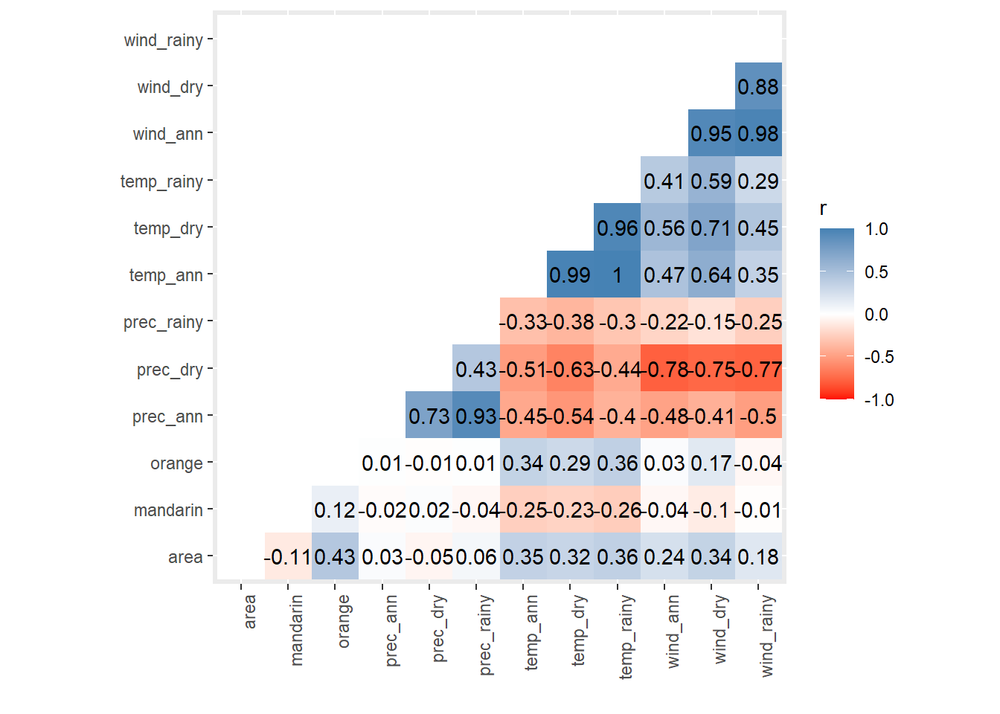
ggsave("figs/correl.png",dpi = 600, height = 7, width = 8)## Warning: Removed 78 rows containing missing values (geom_text).Simpson et al. (2017) prior distributions for hyperparameters
u <- 0.2/0.31
alpha <- 0.01
phi.u <- 0.5
phi.alpha <- 2/3#lembrar de colocar a especie e tamanho da lavoura
# colnames(data)
variables <- c(
# "large","medium","small","mini",
"area",
# "orange",
# "mandarin",
# "lemon","acid_lime",
# "small_area",
# "large_area",
# "prec_dry",
"prec_rainy",
# "temp_dry",
"temp_dry",
# "wind_dry",
# "wind_rainy",
"wind_ann",
"f(S, model = 'bym2', graph=grid_grafo25, scale.model = TRUE, constr = TRUE,
hyper=list(phi = list( prior = 'pc', param = c(phi.u, phi.alpha), initial = -3),
prec = list(prior = 'pc.prec', param = c(u, alpha), initial = 5)))"
)
# 2^6resp<-data$positives
total<-data$samplesmodels_bin<-Bdiclcpomodel_stack(resp=resp, variables=variables,
Ntrials=total,
datos=data, n=20,
family="binomial",
control.predictor=list(compute=FALSE),
control.compute = list(
config=TRUE, dic=TRUE, cpo=TRUE, waic=TRUE),
verbose=F)
save(models_bin, file="./models/best_models_clim.RData")models_bin$`Modelos segun waic`[1:10,]| Modelos | Dic | Waic | LCPO | LCPO-failure |
|---|---|---|---|---|
| resp ~ 1 + temp_dry + wind_ann + f(S, model = ‘bym2’, graph=grid_grafo25, scale.model = TRUE, constr = TRUE, |
hyper=list(phi = list( prior = 'pc', param = c(phi.u, phi.alpha), initial = -3),
prec = list(prior = 'pc.prec', param = c(u, alpha), initial = 5))) | 289.8902| 287.1569| 3.582138| 1.831771||resp ~ 1 + area + temp_dry + wind_ann + f(S, model = ‘bym2’, graph=grid_grafo25, scale.model = TRUE, constr = TRUE,
hyper=list(phi = list( prior = ‘pc’, param = c(phi.u, phi.alpha), initial = -3), prec = list(prior = ‘pc.prec’, param = c(u, alpha), initial = 5))) | 289.9658| 287.2445| 3.605226| 1.871398| |resp ~ 1 + prec_rainy + temp_dry + wind_ann + f(S, model = ‘bym2’, graph=grid_grafo25, scale.model = TRUE, constr = TRUE,
hyper=list(phi = list( prior = ‘pc’, param = c(phi.u, phi.alpha), initial = -3), prec = list(prior = ‘pc.prec’, param = c(u, alpha), initial = 5))) | 290.1758| 287.3756| 3.606311| 1.860893| |resp ~ 1 + area + prec_rainy + temp_dry + wind_ann + f(S, model = ‘bym2’, graph=grid_grafo25, scale.model = TRUE, constr = TRUE,
hyper=list(phi = list( prior = ‘pc’, param = c(phi.u, phi.alpha), initial = -3), prec = list(prior = ‘pc.prec’, param = c(u, alpha), initial = 5))) | 290.2063| 287.4870| 3.703742| 1.925097| |resp ~ 1 + area + prec_rainy + f(S, model = ‘bym2’, graph=grid_grafo25, scale.model = TRUE, constr = TRUE,
hyper=list(phi = list( prior = ‘pc’, param = c(phi.u, phi.alpha), initial = -3), prec = list(prior = ‘pc.prec’, param = c(u, alpha), initial = 5))) | 293.1504| 289.5868| 3.624217| 1.970548| |resp ~ 1 + area + temp_dry + f(S, model = ‘bym2’, graph=grid_grafo25, scale.model = TRUE, constr = TRUE,
hyper=list(phi = list( prior = ‘pc’, param = c(phi.u, phi.alpha), initial = -3), prec = list(prior = ‘pc.prec’, param = c(u, alpha), initial = 5))) | 292.2382| 290.1039| 3.477793| 1.691179| |resp ~ 1 + area + f(S, model = ‘bym2’, graph=grid_grafo25, scale.model = TRUE, constr = TRUE,
hyper=list(phi = list( prior = ‘pc’, param = c(phi.u, phi.alpha), initial = -3), prec = list(prior = ‘pc.prec’, param = c(u, alpha), initial = 5))) | 293.7477| 290.4239| 3.461486| 1.927860| |resp ~ 1 + area + prec_rainy + temp_dry + f(S, model = ‘bym2’, graph=grid_grafo25, scale.model = TRUE, constr = TRUE,
hyper=list(phi = list( prior = ‘pc’, param = c(phi.u, phi.alpha), initial = -3), prec = list(prior = ‘pc.prec’, param = c(u, alpha), initial = 5))) | 292.5277| 290.4247| 3.525270| 1.648551| |resp ~ 1 + prec_rainy + f(S, model = ‘bym2’, graph=grid_grafo25, scale.model = TRUE, constr = TRUE,
hyper=list(phi = list( prior = ‘pc’, param = c(phi.u, phi.alpha), initial = -3), prec = list(prior = ‘pc.prec’, param = c(u, alpha), initial = 5))) | 293.8329| 290.4345| 3.540200| 1.845202| |resp ~ 1 + temp_dry + f(S, model = ‘bym2’, graph=grid_grafo25, scale.model = TRUE, constr = TRUE,
hyper=list(phi = list( prior = ‘pc’, param = c(phi.u, phi.alpha), initial = -3), prec = list(prior = ‘pc.prec’, param = c(u, alpha), initial = 5))) | 292.5081| 290.5057| 3.483792| 1.645850|
# models_bin$`Modelos segun waic`[1,1]
f1 <- positives ~ 1 + temp_dry + wind_ann + f(S, model = "bym2",
graph=grid_grafo25,
scale.model = TRUE,
constr = TRUE,
hyper=list(
phi = list(
prior = "pc",
param = c(phi.u, phi.alpha),
initial = -3),
prec = list(
prior = "pc.prec",
param = c(u, alpha),
initial = 5)))
mod<-inla(f1, family="binomial", data=data, Ntrials = samples,
control.compute=list(dic=TRUE,cpo=TRUE, waic=TRUE), verbose = FALSE)
# bym2mod <- inla.rerun(mod)
saveRDS(mod, "./models/best_model.RDS")# mod$logfile
summary(mod)##
## Call:
## c("inla(formula = f1, family = \"binomial\", data = data, Ntrials =
## samples, ", " verbose = FALSE, control.compute = list(dic = TRUE, cpo =
## TRUE, ", " waic = TRUE))")
## Time used:
## Pre = 11.4, Running = 3.27, Post = 0.112, Total = 14.7
## Fixed effects:
## mean sd 0.025quant 0.5quant 0.975quant mode kld
## (Intercept) 10.468 2.556 5.586 10.412 15.667 10.295 0
## temp_dry -0.764 0.184 -1.147 -0.756 -0.425 -0.739 0
## wind_ann 1.050 0.585 -0.051 1.033 2.248 0.997 0
##
## Random effects:
## Name Model
## S BYM2 model
##
## Model hyperparameters:
## mean sd 0.025quant 0.5quant 0.975quant mode
## Precision for S 0.600 0.174 0.331 0.575 1.010 0.529
## Phi for S 0.343 0.232 0.023 0.307 0.827 0.059
##
## Expected number of effective parameters(stdev): 50.47(4.12)
## Number of equivalent replicates : 1.80
##
## Deviance Information Criterion (DIC) ...............: 289.89
## Deviance Information Criterion (DIC, saturated) ....: 157.28
## Effective number of parameters .....................: 49.25
##
## Watanabe-Akaike information criterion (WAIC) ...: 287.16
## Effective number of parameters .................: 35.58
##
## Marginal log-Likelihood: -149.96
## CPO and PIT are computed
##
## Posterior marginals for the linear predictor and
## the fitted values are computedbind_rows(#as.data.frame(mod$marginals.fixed$mandarin) %>%
# mutate(var = "Mandarin"),
# as.data.frame(mod$marginals.fixed$prec_dry) %>%
# mutate(var = "prec_dry"),
as.data.frame(mod$marginals.fixed$temp_dry) %>%
mutate(var = "Temperature dry"),
as.data.frame(mod$marginals.fixed$wind_ann) %>%
mutate(var = "Wind annual")
) %>%
ggplot(aes(x, y, color = var))+
geom_vline(xintercept = 0)+
geom_line()+
facet_wrap(~var, scales = "free")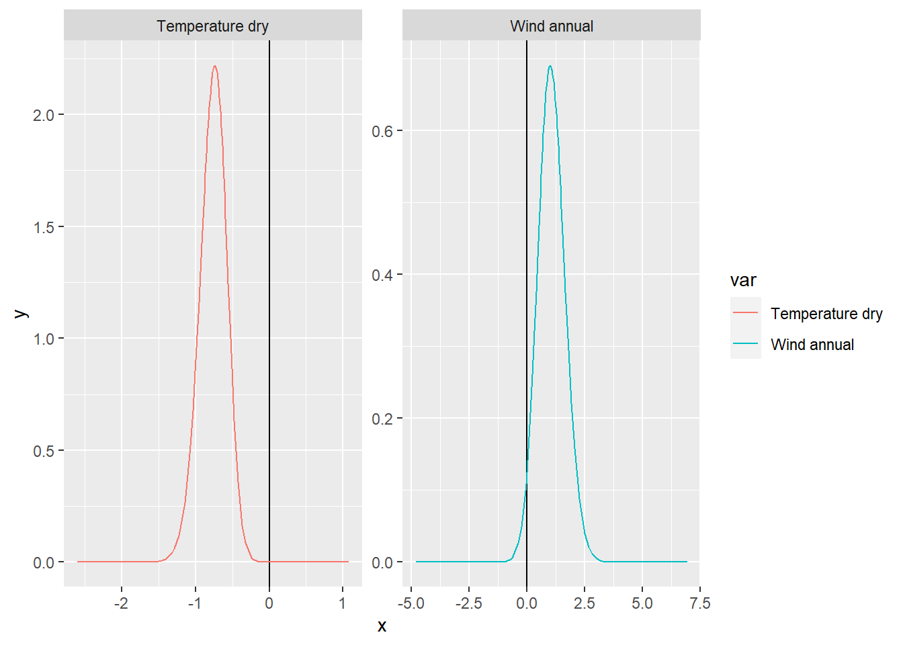
rr2 = rr>0
### --- Mean of the structured effect --- ###
rr2[as.numeric(names(tab))] <- mod$summary.random$S$mean[1:nrow(data)]
df = as(rr2, "SpatialPixelsDataFrame")
test_df <- as.data.frame(df)
colnames(test_df) <- c("value", "x", "y")
g_spt_v = ggplot(test_df %>%
filter(value!=0)) +
geom_sf( data = BRA, fill = "white", color = "gray60")+
geom_sf(data = MG, fill = "white", color = "black") +
geom_tile(aes(x=x, y=y, fill=value), alpha=1)+
scale_fill_viridis_c(option = "E")+
coord_sf() +
theme_minimal_grid(font_size = 8)+
labs(x = "Longitude",
y = "Latitude",
fill = "")+
north( location = "topleft", scale = 0.08, symbol = 10,
x.min=-51, x.max=-43.5, y.min=-23, y.max=-18)+
scalebar(location = "bottomleft", dist = 50,
dist_unit = "km", transform = TRUE,
x.min=-51, x.max=-44, y.min=-23, y.max=-18,
st.bottom = FALSE,
st.dist = 0.03, st.size = 2)+
ylim(-23, -18)+
xlim(-51, -43.5)+
theme(panel.border = element_rect(color = "gray")) rr2 = rr>0
### --- Mean of the structured effect --- ###
rr2[as.numeric(names(tab))] <- mod$summary.random$S$sd[1:nrow(data)]
df = as(rr2, "SpatialPixelsDataFrame")
test_df <- as.data.frame(df)
colnames(test_df) <- c("value", "x", "y")
g_spt_v_sd = ggplot(test_df %>%
filter(value!=0)) +
geom_sf( data = BRA, fill = "white", color = "gray60")+
geom_sf(data = MG, fill = "white", color = "black") +
geom_tile(aes(x=x, y=y, fill=value), alpha=0.95)+
scale_fill_gradient(low = "white", high = "#37bf87")+
coord_sf() +
theme_minimal_grid(font_size = 8)+
labs(x = "Longitude",
y = "Latitude",
fill = "")+
north( location = "topleft", scale = 0.08, symbol = 10,
x.min=-51, x.max=-43.5, y.min=-23, y.max=-18)+
scalebar(location = "bottomleft", dist = 50,
dist_unit = "km", transform = TRUE,
x.min=-51, x.max=-44, y.min=-23, y.max=-18,
st.bottom = FALSE,
st.dist = 0.03, st.size = 2)+
ylim(-23, -18)+
xlim(-51, -43.5)+
theme(panel.border = element_rect(color = "gray")) rr2[as.numeric(names(tab))] <- mod$summary.fitted.values$mean
# plot(rr2)
df = as(rr2, "SpatialPixelsDataFrame")
test_df <- as.data.frame(df)
colnames(test_df) <- c("value", "x", "y")
g1_v = ggplot(test_df %>%
filter(value>0))+
geom_sf( data = BRA, fill = "white", color = "gray60")+
geom_sf(data = MG, fill = "white", color = "black") +
geom_tile(aes(x=x, y=y, fill=value), alpha=0.95)+
# geom_point(data = hh_hlb,
# aes(lon, lat, color = presenca),
# size = 0.4)+
# scale_color_manual(values =c("black","red"))+
scale_fill_distiller(palette = "YlOrRd", direction = 1)+
coord_sf() +
theme_minimal_grid(font_size = 8)+
labs(x = "Longitude",
y = "Latitude",
fill = "")+
north( location = "topleft", scale = 0.08, symbol = 10,
x.min=-51, x.max=-43.5, y.min=-23, y.max=-18)+
scalebar(location = "bottomleft", dist = 50,
dist_unit = "km", transform = TRUE,
x.min=-51, x.max=-44, y.min=-23, y.max=-18,
st.bottom = FALSE,
st.dist = 0.03, st.size = 2)+
ylim(-23, -18)+
xlim(-51, -43.5)+
theme(panel.border = element_rect(color = "gray"))
# ggsave("figs/map_posterior.png", dpi = 600, height = 5, width = 8)rr2[as.numeric(names(tab))] <- mod$summary.fitted.values$sd
df = as(rr2, "SpatialPixelsDataFrame")
test_df <- as.data.frame(df)
colnames(test_df) <- c("value", "x", "y")
g1_v_sd = ggplot(test_df %>%
filter(value>0))+
geom_sf( data = BRA, fill = "white", color = "gray60")+
geom_sf(data = MG, fill = "gray99", color = "black") +
geom_tile(aes(x=x, y=y, fill=value), alpha=0.95)+
# scale_fill_viridis_c(option = "B") +
scale_color_manual(values ="black")+
scale_fill_gradient(low = "white", high = "steelblue")+
coord_sf() +
theme_minimal_grid(font_size = 8)+
labs(x = "Longitude",
y = "Latitude",
fill = "")+
north( location = "topleft", scale = 0.08, symbol = 10,
x.min=-51, x.max=-43.5, y.min=-23, y.max=-18)+
scalebar(location = "bottomleft", dist = 50,
dist_unit = "km", transform = TRUE,
x.min=-51, x.max=-44, y.min=-23, y.max=-18,
st.bottom = FALSE,
st.dist = 0.03, st.size = 2)+
ylim(-23, -18)+
xlim(-51, -43.5)+
theme(panel.border = element_rect(color = "gray"))plot_grid(g_spt_v,
g_spt_v_sd,
g1_v,
g1_v_sd,
labels = "auto",
scale = 0.95)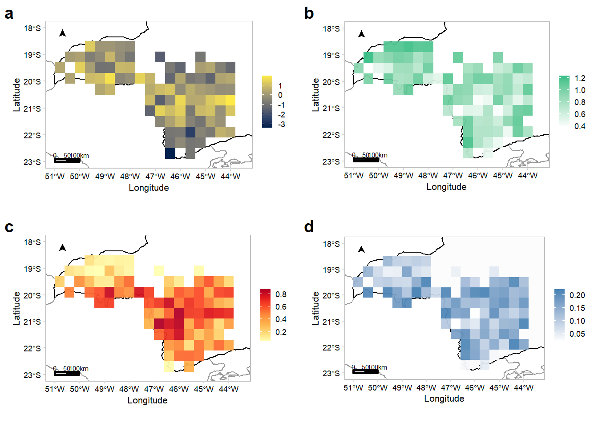
ggsave("figs/combo_var.png", dpi = 300, height = 6, width = 10)pca_rotated <- psych::principal(data[c(3:11,14,20:19)], rotate="varimax",
nfactors=3,scores=TRUE, covar=FALSE)
pca_rotated$loadings ##
## Loadings:
## RC1 RC2 RC3
## prec_ann -0.371 0.898
## prec_dry -0.774 0.475
## prec_rainy 0.932
## temp_ann 0.330 0.821 -0.391
## temp_dry 0.437 0.747 -0.438
## temp_rainy 0.268 0.851 -0.362
## wind_ann 0.977 0.127 -0.122
## wind_dry 0.911 0.361
## wind_rainy 0.972 -0.142
## area 0.205 0.617 0.290
## mandarin -0.322
## orange 0.635 0.120
##
## RC1 RC2 RC3
## SS loadings 3.889 3.001 2.516
## Proportion Var 0.324 0.250 0.210
## Cumulative Var 0.324 0.574 0.784# plot(pca_rotated)Put the five first components into the data frame
data_pca<-data[,c(1,2,12,13)]
data_pca$PC1<-pca_rotated$scores[,1]
data_pca$PC2<-pca_rotated$scores[,2]
data_pca$PC3<-pca_rotated$scores[,3]
# data_pca$PC4<-pca_rotated$scores[,4]
# data_pca$PC5<-pca_rotated$scores[,5]
write.table(data_pca, "./data/data_pca")
data_pca<-read.table("./data/data_pca")Add a column for the random effect
data_pca <- data.frame(data_pca, S=c(1:length(data_pca[,1])))Simpson et al. (2017) prior distributions for hyperparameters
u <- 0.2/0.31
alpha <- 0.01
phi.u <- 0.5
phi.alpha <- 2/3variables <- c(
paste("PC", c(1, 2, 3), sep = ""),
"f(S, model = 'bym2', graph=grid_grafo25, scale.model = TRUE, constr = TRUE,
hyper=list(phi = list( prior = 'pc', param = c(phi.u, phi.alpha), initial = -3),
prec = list(prior = 'pc.prec', param = c(u, alpha), initial = 5)))"
)resp<-data_pca$positives
total<-data_pca$samplesmodels_pca<-Bdiclcpomodel_stack(resp=resp, variables=variables,
Ntrials=total,
datos=data_pca, n=20,
family="binomial",
control.predictor=list(compute=FALSE),
control.compute = list(
config=TRUE, dic=TRUE, cpo=TRUE, waic=TRUE),
verbose=FALSE)
save(models_pca, file="./models/best_models_pca.RData")models_pca$`Modelos segun waic`[1:10,]| Modelos | Dic | Waic | LCPO | LCPO-failure |
|---|---|---|---|---|
| resp ~ 1 + PC2 + PC3 + f(S, model = ‘bym2’, graph=grid_grafo25, scale.model = TRUE, constr = TRUE, |
hyper=list(phi = list( prior = 'pc', param = c(phi.u, phi.alpha), initial = -3),
prec = list(prior = 'pc.prec', param = c(u, alpha), initial = 5))) | 290.2614| 286.0155| 3.651664| 1.919868||resp ~ 1 + PC2 + f(S, model = ‘bym2’, graph=grid_grafo25, scale.model = TRUE, constr = TRUE,
hyper=list(phi = list( prior = ‘pc’, param = c(phi.u, phi.alpha), initial = -3), prec = list(prior = ‘pc.prec’, param = c(u, alpha), initial = 5))) | 291.6449| 286.8936| 3.595011| 1.835189| |resp ~ 1 + PC1 + PC2 + PC3 + f(S, model = ‘bym2’, graph=grid_grafo25, scale.model = TRUE, constr = TRUE,
hyper=list(phi = list( prior = ‘pc’, param = c(phi.u, phi.alpha), initial = -3), prec = list(prior = ‘pc.prec’, param = c(u, alpha), initial = 5))) | 291.9592| 287.9956| 3.751064| 1.841816| |resp ~ 1 + PC1 + PC2 + f(S, model = ‘bym2’, graph=grid_grafo25, scale.model = TRUE, constr = TRUE,
hyper=list(phi = list( prior = ‘pc’, param = c(phi.u, phi.alpha), initial = -3), prec = list(prior = ‘pc.prec’, param = c(u, alpha), initial = 5))) | 293.0395| 288.8244| 3.593485| 1.726358| |resp ~ 1 + PC3 + f(S, model = ‘bym2’, graph=grid_grafo25, scale.model = TRUE, constr = TRUE,
hyper=list(phi = list( prior = ‘pc’, param = c(phi.u, phi.alpha), initial = -3), prec = list(prior = ‘pc.prec’, param = c(u, alpha), initial = 5))) | 292.7390| 289.7045| 3.640913| 1.814727| |resp ~ 1 + PC1 + PC3 + f(S, model = ‘bym2’, graph=grid_grafo25, scale.model = TRUE, constr = TRUE,
hyper=list(phi = list( prior = ‘pc’, param = c(phi.u, phi.alpha), initial = -3), prec = list(prior = ‘pc.prec’, param = c(u, alpha), initial = 5))) | 293.6272| 290.6279| 3.572353| 1.899736| |resp ~ 1 + f(S, model = ‘bym2’, graph=grid_grafo25, scale.model = TRUE, constr = TRUE,
hyper=list(phi = list( prior = ‘pc’, param = c(phi.u, phi.alpha), initial = -3), prec = list(prior = ‘pc.prec’, param = c(u, alpha), initial = 5))) | 294.4201| 291.2162| 3.463111| 1.830511| |resp ~ 1 + PC1 + f(S, model = ‘bym2’, graph=grid_grafo25, scale.model = TRUE, constr = TRUE,
hyper=list(phi = list( prior = ‘pc’, param = c(phi.u, phi.alpha), initial = -3), prec = list(prior = ‘pc.prec’, param = c(u, alpha), initial = 5))) | 295.6989| 292.4524| 3.508525| 1.749499| |resp ~ 1 + PC1 + PC2 + PC3 | 521.8001| 540.8262| 2.981468| 0.000000| |resp ~ 1 + PC1 + PC2 | 531.6719| 549.7266| 3.030252| 0.000000|
f1 <- positives ~ 1 + PC2 + PC3 + f(S, model = "bym2",
graph=grid_grafo25,
scale.model = TRUE,
constr = TRUE,
hyper=list(
phi = list(
prior = "pc",
param = c(phi.u, phi.alpha),
initial = -3),
prec = list(
prior = "pc.prec",
param = c(u, alpha),
initial = 5)))
mod_pca<-inla(f1, family="binomial", data=data_pca, Ntrials = samples,
control.compute=list(dic=TRUE,cpo=TRUE, waic=TRUE), verbose = FALSE)mod_pca <- inla.rerun(mod_pca)
saveRDS(mod_pca, "./models/best_model_pca.RDS")# mod$logfile
summary(mod_pca)##
## Call:
## c("inla(formula = f1, family = \"binomial\", data = data_pca, Ntrials =
## samples, ", " verbose = FALSE, control.compute = list(dic = TRUE, cpo =
## TRUE, ", " waic = TRUE))")
## Time used:
## Pre = 11.3, Running = 4.17, Post = 0.149, Total = 15.6
## Fixed effects:
## mean sd 0.025quant 0.5quant 0.975quant mode kld
## (Intercept) -0.438 0.170 -0.782 -0.434 -0.113 -0.427 0
## PC2 -0.753 0.278 -1.314 -0.750 -0.211 -0.742 0
## PC3 0.443 0.213 0.030 0.441 0.867 0.437 0
##
## Random effects:
## Name Model
## S BYM2 model
##
## Model hyperparameters:
## mean sd 0.025quant 0.5quant 0.975quant mode
## Precision for S 0.503 0.139 0.285 0.485 0.828 0.450
## Phi for S 0.424 0.234 0.050 0.411 0.867 0.239
##
## Expected number of effective parameters(stdev): 52.40(3.96)
## Number of equivalent replicates : 1.74
##
## Deviance Information Criterion (DIC) ...............: 290.26
## Deviance Information Criterion (DIC, saturated) ....: 157.65
## Effective number of parameters .....................: 50.98
##
## Watanabe-Akaike information criterion (WAIC) ...: 286.01
## Effective number of parameters .................: 35.62
##
## Marginal log-Likelihood: -153.63
## CPO and PIT are computed
##
## Posterior marginals for the linear predictor and
## the fitted values are computedrr2 = rr>0
### --- Mean of the structured effect --- ###
rr2[as.numeric(names(tab))] <- mod_pca$summary.random$S$mean[1:nrow(data)]
df = as(rr2, "SpatialPixelsDataFrame")
test_df <- as.data.frame(df)
colnames(test_df) <- c("value", "x", "y")
g_spt_pc = ggplot(test_df %>%
filter(value!=0)) +
geom_sf( data = BRA, fill = "white", color = "gray60")+
geom_sf(data = MG, fill = "white", color = "black") +
geom_tile(aes(x=x, y=y, fill=value), alpha=0.95)+
scale_fill_viridis_c(option = "E")+
coord_sf() +
theme_minimal_grid(font_size = 8)+
labs(x = "Longitude",
y = "Latitude",
fill = "")+
north( location = "topleft", scale = 0.08, symbol = 10,
x.min=-51, x.max=-43.5, y.min=-23, y.max=-18)+
scalebar(location = "bottomleft", dist = 50,
dist_unit = "km", transform = TRUE,
x.min=-51, x.max=-44, y.min=-23, y.max=-18,
st.bottom = FALSE,
st.dist = 0.03, st.size = 2)+
ylim(-23, -18)+
xlim(-51, -43.5)+
theme(panel.border = element_rect(color = "gray")) rr2 = rr>0
### --- Mean of the structured effect --- ###
rr2[as.numeric(names(tab))] <- mod_pca$summary.random$S$sd[1:nrow(data)]
df = as(rr2, "SpatialPixelsDataFrame")
test_df <- as.data.frame(df)
colnames(test_df) <- c("value", "x", "y")
g_spt_pc_sd = ggplot(test_df %>%
filter(value!=0)) +
geom_sf( data = BRA, fill = "white", color = "gray60")+
geom_sf(data = MG, fill = "white", color = "black") +
geom_tile(aes(x=x, y=y, fill=value), alpha=0.95)+
scale_fill_gradient(low = "white", high = "#37bf87")+
coord_sf() +
theme_minimal_grid(font_size = 8)+
labs(x = "Longitude",
y = "Latitude",
fill = "")+
north( location = "topleft", scale = 0.08, symbol = 10,
x.min=-51, x.max=-43.5, y.min=-23, y.max=-18)+
scalebar(location = "bottomleft", dist = 50,
dist_unit = "km", transform = TRUE,
x.min=-51, x.max=-44, y.min=-23, y.max=-18,
st.bottom = FALSE,
st.dist = 0.03, st.size = 2)+
ylim(-23, -18)+
xlim(-51, -43.5)+
theme(panel.border = element_rect(color = "gray")) rr2[as.numeric(names(tab))] <- mod_pca$summary.fitted.values$mean
# plot(rr2)
df = as(rr2, "SpatialPixelsDataFrame")
test_df <- as.data.frame(df)
colnames(test_df) <- c("value", "x", "y")
g1_pc = ggplot(test_df %>%
filter(value>0))+
geom_sf( data = BRA, fill = "white", color = "gray60")+
geom_sf(data = MG, fill = "gray99", color = "black") +
geom_tile(aes(x=x, y=y, fill=value), alpha=0.95)+
# scale_fill_viridis_c(option = "B") +
scale_color_manual(values ="black")+
scale_fill_distiller(palette = "YlOrRd", direction = 1)+
coord_sf() +
theme_minimal_grid(font_size = 8)+
labs(x = "Longitude",
y = "Latitude",
fill = "")+
north( location = "topleft", scale = 0.08, symbol = 10,
x.min=-51, x.max=-43.5, y.min=-23, y.max=-18)+
scalebar(location = "bottomleft", dist = 50,
dist_unit = "km", transform = TRUE,
x.min=-51, x.max=-44, y.min=-23, y.max=-18,
st.bottom = FALSE,
st.dist = 0.03, st.size = 2)+
ylim(-23, -18)+
xlim(-51, -43.5)+
theme(panel.border = element_rect(color = "gray"))
# ggsave("figs/map_posterior_pca.png", dpi = 600, height = 5, width = 8)rr2[as.numeric(names(tab))] <- mod_pca$summary.fitted.values$sd
# plot(rr2)
df = as(rr2, "SpatialPixelsDataFrame")
test_df <- as.data.frame(df)
colnames(test_df) <- c("value", "x", "y")
g1_pc_sd = ggplot(test_df %>%
filter(value>0))+
geom_sf( data = BRA, fill = "white", color = "gray60")+
geom_sf(data = MG, fill = "gray99", color = "black") +
geom_raster(aes(x=x, y=y, fill=value), alpha=0.95)+
# scale_fill_viridis_c(option = "B") +
scale_color_manual(values ="black")+
scale_fill_gradient(low = "white", high = "steelblue")+
coord_sf() +
theme_minimal_grid(font_size = 8)+
labs(x = "Longitude",
y = "Latitude",
fill = "")+
north( location = "topleft", scale = 0.08, symbol = 10,
x.min=-51, x.max=-43.5, y.min=-23, y.max=-18)+
scalebar(location = "bottomleft", dist = 50,
dist_unit = "km", transform = TRUE,
x.min=-51, x.max=-44, y.min=-23, y.max=-18,
st.bottom = FALSE,
st.dist = 0.03, st.size = 2)+
ylim(-23, -18)+
xlim(-51, -43.5)+
theme(panel.border = element_rect(color = "gray"))
# ggsave("figs/map_posterior_sd_pca.png", dpi = 600, height = 4, width = 6)plot_grid(g_spt_pc,
g_spt_pc_sd,
g1_pc,
g1_pc_sd,
labels = "auto",
scale = 0.95)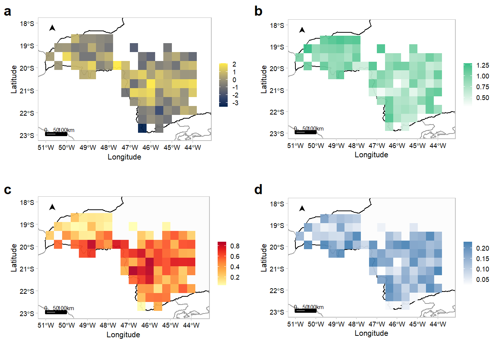
ggsave("figs/combo_pca.png", dpi = 300, height = 6, width = 10)Clime_map = function(data, var){
z = as.numeric(data[[var]])
data2 = data.frame(data[,c("x","y")],z)
g =data2 %>%
# gather(c(4,5,7,8,10,11), key = "var", value = "value") %>%
ggplot()+
geom_sf( data = BRA, fill = "white", color = "gray60")+
geom_sf(data = MG, fill = "gray99", color = "black") +
geom_tile(aes(x,y, fill = z ),
# fill ="gray60",
size = .2,
color = "gray65")+
geom_point(data = hh_hlb,
aes(lon, lat, color = presenca),
size = 0.4)+
scale_color_manual(values =c("#3e9b39", 'red'))+
scale_fill_viridis_c(option = "B")+
coord_sf() +
guides(color = guide_legend(override.aes = list(size=2.5)))+
theme_minimal_grid(font_size = 8)+
labs(x = "Longitude",
y = "Latitude",
color = "", fill = "")+
north( location = "topleft", scale = 0.08, symbol = 10,
x.min=-51, x.max=-43.5, y.min=-23, y.max=-18)+
scalebar(location = "bottomleft", dist = 50,
dist_unit = "km", transform = TRUE,
x.min=-51, x.max=-44, y.min=-23, y.max=-18,
st.bottom = FALSE,
st.dist = 0.03, st.size = 2)+
ylim(-23, -18)+
xlim(-51, -43.5)+
facet_wrap(~presenca)+
theme(panel.border = element_rect(color = "gray"))
return(g)
}plot_grid(
Clime_map(data=data, var="prec_rainy"),
Clime_map(data=data, var="temp_dry"),
Clime_map(data=data, var="wind_ann"),
ncol = 1,
labels = c("P_rainy", "T_dry","W_ann")
)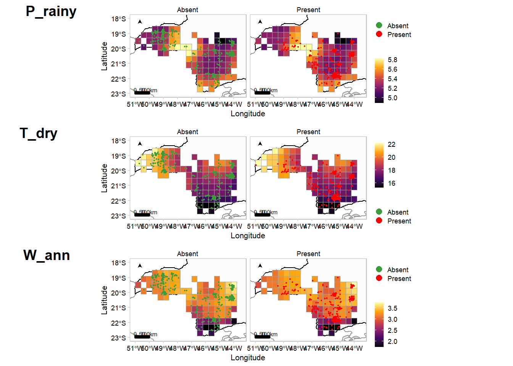
ggsave("figs/clim_var_mapas.png", dpi=300, height = 10,width = 8)plot_grid(
Clime_map(data=data, var="orange"),
Clime_map(data=data, var="mandarin"),
Clime_map(data=data, var="area"),
ncol = 1,
labels = c("Orange","Mandarin","Area")
)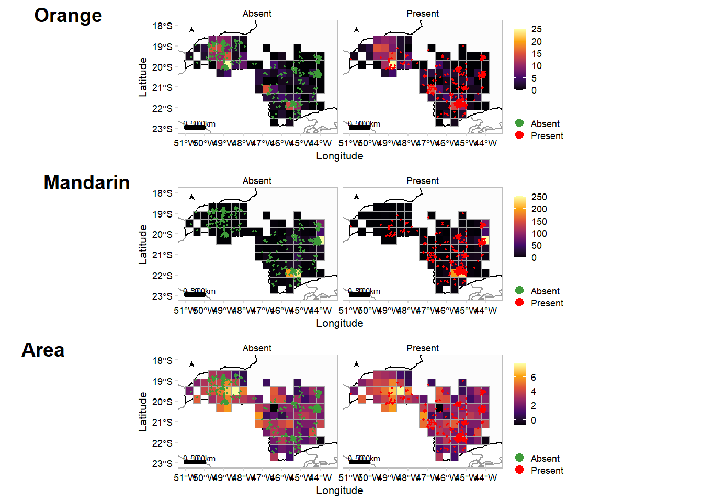
ggsave("figs/orchard_var_mapas.png", dpi=300, height = 8,width = 6)